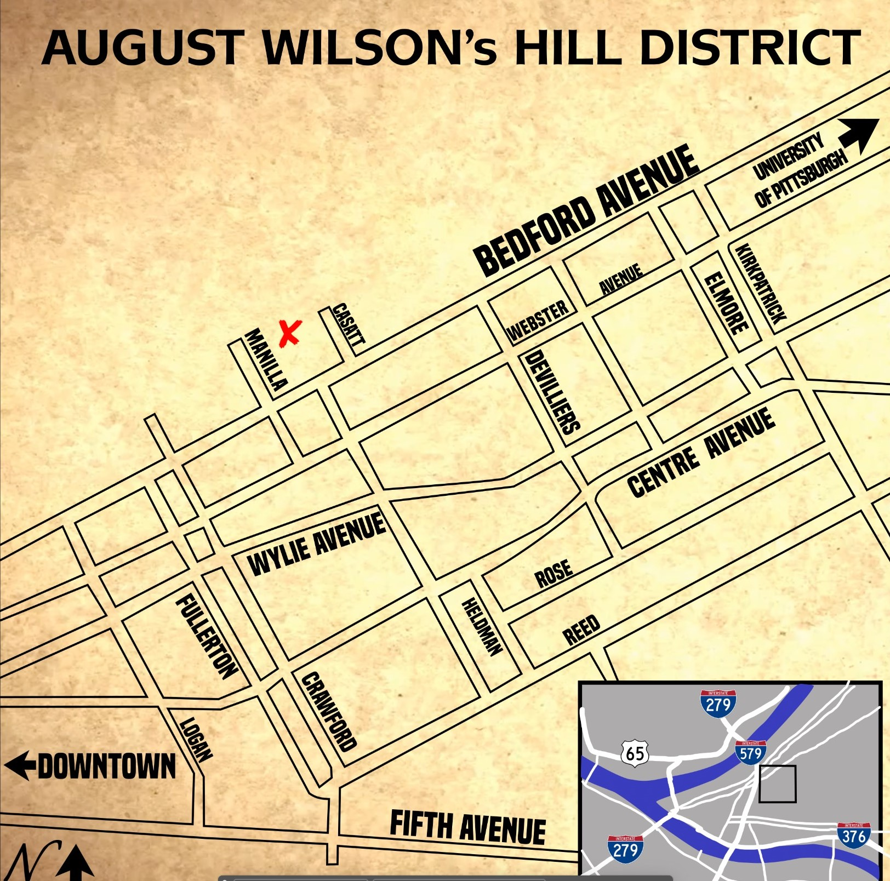

The Hill District
Home
About
Services
Contact
pages with content...will modify this later. Click on the links below to take you to the information for each page
Freedom Corner
Crawford Grill
August Wilson's House
Mainway Supermarket
1839 Wylie Avenue

This is some information.
I'm making a paragraph